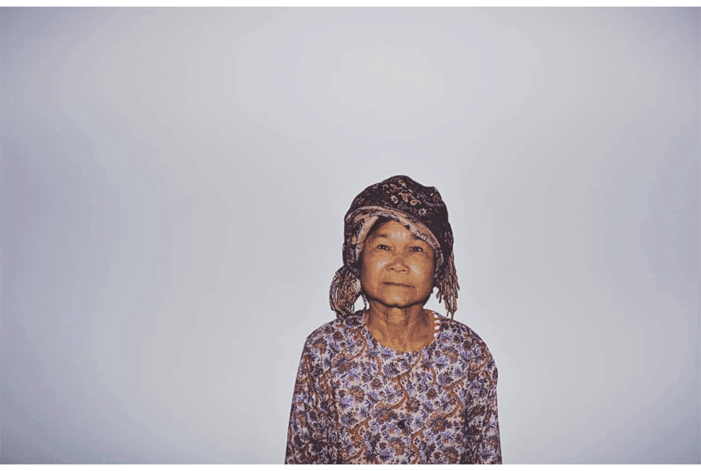

Buntheun Oung
Mission Statement
Mission Statement

Instagram
Statement
Pol Pot was the leader of the Khmer Rouge and applied Chinese communist ideologies to
Cambodia with devastating effects. The Khmer Rouge targeted educated people, who were
considered a threat to their regime, killing doctors, artists, musicians, scholars and monks in the
process. Between 1975 and 1979, 3 million Cambodians are estimated to have been killed. The
Khmer Rouge resulted in immediate loss of Cambodian knowledge, culture and customs, and the
people of Cambodian sought refuge in other countries to flee the genocide. As a result, there are
now Cambodian communities scattered across America, Australian, France, New Zealand and
other parts of the world, still holding on to their culture. Second-generation Cambodians in these
communities have a second-hand knowledge of their culture through their parents and grandparents
war stories. These communities are geographically isolated from each other across the
world and the internet plays a key role in connecting these people together.
The name ‘Scattered Offerings’ acknowledges the people of Cambodia and how they have been
scattered throughout the world due to the Khmer rouge regime and the genocide. ‘Offerings’
refers to the placing of offerings to Buddha or your ancestors, a practice used within Buddhism,
and acknowledges the Cambodian religious identity.
‘Scattered Offerings’ has a minimal identity to communicate clearly and focus on the stories submitted. A continuous sillouette runs along the header of each page of the website. While some sillouettes show classic scenery of Cambodian landscape and architecture, others show daily occurances such as farmers taking to the fields or monks in prayer. This scenery is reminiscent of the happier days and beauty of Cambodian culture. The continuous line is representative of a heartbeat, of survival and furthermore the necessity for the Cambodian culture to thrive.
The colour palette of ‘Scattered Offerings’ is limited to black and white. This minimal palette adheres to Communist ideology – that is, restricted creative expression, lack of indulgence in culture and art. The use of black and white is appropriate to the bleak nature of the stories submitted by Khmer Rouge survivors.
Submitted stories are categorised according to three fields: date submitted, user’s location, user type (user, third person, anonymous). When the user enters a submission online, they are required to enter the current date, location, title of story, text, and optional photos with captions. For a guest user, they may find stories through the world map on the main page (with the ability to search stories by continent), user profiles, keywords in search bar, or use the archive page to search by date, location and submission (or a combination of the above).
The world map on the main page, with black squares scattered across, serves as a visual component to the archival system. The black squares each represent a story, placed on the map according to location, and when clicked take the user to the respective continent page. From there, the user can explore stories submitted from that specific area of the world. This is only way one in which the user can engage with the archival system of ‘Scattered Offerings’. There are many similar survival stories between the communities of Cambodians scattered across the world. ‘Scattered Offerings’ seeks to collect, preserve and archive the experiences of the Khmer Rouge. By submitting their stories on ‘Scattered Offerings’, Cambodians can engage by contributing to the archival of stories online. To share these stories could act as therapy for some, providing a platform to reconnect with the scattered Cambodian community to heal old pain and bring closure to families. This is also a platform for younger generations that want to learn more about their own history and reconnect with their culture. With the website’s goal of trying to promote Cambodian culture and preserve knowledge for future generations, I hope that Cambodians can regain a sense of identity through this website before this history is forgotten.
‘Scattered Offerings’ has a minimal identity to communicate clearly and focus on the stories submitted. A continuous sillouette runs along the header of each page of the website. While some sillouettes show classic scenery of Cambodian landscape and architecture, others show daily occurances such as farmers taking to the fields or monks in prayer. This scenery is reminiscent of the happier days and beauty of Cambodian culture. The continuous line is representative of a heartbeat, of survival and furthermore the necessity for the Cambodian culture to thrive.
The colour palette of ‘Scattered Offerings’ is limited to black and white. This minimal palette adheres to Communist ideology – that is, restricted creative expression, lack of indulgence in culture and art. The use of black and white is appropriate to the bleak nature of the stories submitted by Khmer Rouge survivors.
Submitted stories are categorised according to three fields: date submitted, user’s location, user type (user, third person, anonymous). When the user enters a submission online, they are required to enter the current date, location, title of story, text, and optional photos with captions. For a guest user, they may find stories through the world map on the main page (with the ability to search stories by continent), user profiles, keywords in search bar, or use the archive page to search by date, location and submission (or a combination of the above).
The world map on the main page, with black squares scattered across, serves as a visual component to the archival system. The black squares each represent a story, placed on the map according to location, and when clicked take the user to the respective continent page. From there, the user can explore stories submitted from that specific area of the world. This is only way one in which the user can engage with the archival system of ‘Scattered Offerings’. There are many similar survival stories between the communities of Cambodians scattered across the world. ‘Scattered Offerings’ seeks to collect, preserve and archive the experiences of the Khmer Rouge. By submitting their stories on ‘Scattered Offerings’, Cambodians can engage by contributing to the archival of stories online. To share these stories could act as therapy for some, providing a platform to reconnect with the scattered Cambodian community to heal old pain and bring closure to families. This is also a platform for younger generations that want to learn more about their own history and reconnect with their culture. With the website’s goal of trying to promote Cambodian culture and preserve knowledge for future generations, I hope that Cambodians can regain a sense of identity through this website before this history is forgotten.